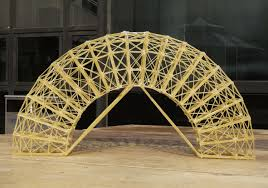

This is our webstite that we used to track our progress and our process for building our bridges.
This project is how to make bridges of spagehtti that can sustain the most amount of weight. This project also teaches how how to add forces and vectors and how to use that knowledge when building our bridges. There also is a challenge with gluing spaghetti together. From having to be careful to not burn yourself with the hot glue, to making sure all the spaghetti are all even while building your bridge. This website shows the design process and the testing our group had to do while trying to bulid a bridge that can sustain the most amount of weight out of spaghetti.
DESIGN PROCESS
___________________________
BRIDGE 1
___________________